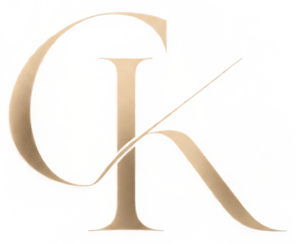

Web design
Création d'interfaces modernes, élégantes et pensées pour une expérience claire.

Web Developer · Web DesignerPortfolio ·Developer · Web Designer
Je conçois des sites, des identités et des supports visuels qui donnent aux projets une présence cohérente et mémorable.
Découvrir les projets ↓03 — Expertise
Création d'interfaces modernes, élégantes et pensées pour une expérience claire.
Création et intégration de sites WordPress personnalisés et performants.
Refonte de sites existants pour améliorer leur identité et leur expérience.
Conception de structures et interfaces qui mettent le contenu en valeur.
Optimisation du référencement naturel et de la visibilité dans les moteurs de recherche et les réponses IA.
04 — Process
Comprendre le projet, ses objectifs et l'identité de la marque.
Créer une direction visuelle cohérente et une interface adaptée.
Transformer le design en expérience web fonctionnelle avec WordPress.
Optimiser les détails, les interactions et la présentation finale.
01 — Projets sélectionnés
Les projets sont classés selon leur contenu : une expérience digitale à utiliser, ou une direction visuelle à ressentir.
02 — À propos
Mon profil réunit développement WordPress, UX/UI, SEO et sensibilité visuelle. Je peux ainsi penser l'ensemble d'un projet, de son image à son expérience.
05 — Compétences
WordPress
HTML · CSS · JavaScript
PHP · Laravel · Vue.js
UI Design
Responsive Design
UX · Visual Design
Google Search Console · Google Analytics
Semrush · Figma ·
Elementor
Photoshop · Illustrator · GitHub · VS Code
03 — Contact
Vous avez un projet en tête ? Parlons-en.
Démarrer une conversation ↗